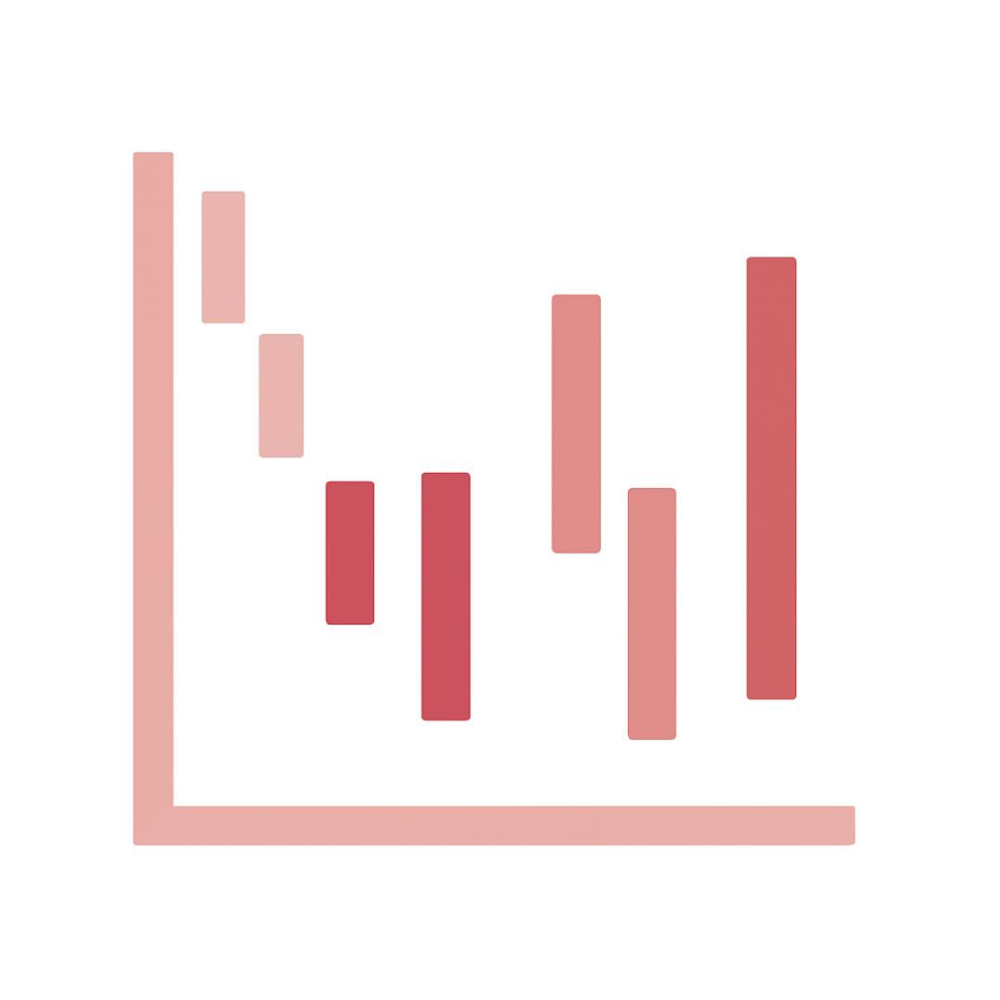

Pie Chart
The most popular and criticized

Meaning: Represents parts of a whole in a circular form.
History: As Edward Tufte noted, "the only thing worse than one pie chart is lots of them." Otto Neurath preferred semantic iconographics.
Usage: Best used with two segments for clear comparisons.
Example: What Do 7 Billion People Do
History: As Edward Tufte noted, "the only thing worse than one pie chart is lots of them." Otto Neurath preferred semantic iconographics.
Usage: Best used with two segments for clear comparisons.
Example: What Do 7 Billion People Do
Venn Diagram
Shows overlapping relationships

Click to flip
Meaning: Illustrates the commonalities between groups.
History: Widely used despite its limitations in quantifying overlap.
Usage: Effective for simple comparisons of 2–3 sets.
Example: The Anatomy Of Determination
History: Widely used despite its limitations in quantifying overlap.
Usage: Effective for simple comparisons of 2–3 sets.
Example: The Anatomy Of Determination
Concentric Diagram
Layers radiating from the center

Click to flip
Meaning: Depicts a hierarchy with decreasing importance from the center.
History: Used to emphasize a central idea with peripheral layers.
Usage: Ideal for visualizing core concepts versus supporting details.
Example: Going Through Anti-Success
History: Used to emphasize a central idea with peripheral layers.
Usage: Ideal for visualizing core concepts versus supporting details.
Example: Going Through Anti-Success
Circular Chart
Comparing lengths on a circle

Click to flip
Meaning: Uses a circle to represent 100% as a whole.
History: Evolved as a means to show proportional relationships.
Usage: Suitable for schedules, life spans, or project durations.
Example: Calorie Intake and Outtake
History: Evolved as a means to show proportional relationships.
Usage: Suitable for schedules, life spans, or project durations.
Example: Calorie Intake and Outtake
Bubble Chart
Rough comparison of quantities

Click to flip
Meaning: Uses bubbles to depict relative data sizes.
History: Developed for rough comparisons when precision is less critical.
Usage: Effective for comparing budgets, populations, etc.
Example: What The Internet Thinks About
History: Developed for rough comparisons when precision is less critical.
Usage: Effective for comparing budgets, populations, etc.
Example: What The Internet Thinks About
Bubble Race Chart
Bubbles with positional meaning

Click to flip
Meaning: Assigns extra meaning (like education level) to bubble positions.
History: Inspired by dynamic data displays such as Hans Rosling’s work.
Usage: Enhances comparisons by adding a positional variable.
Example: Hans Rosling’s Bubble Chart
History: Inspired by dynamic data displays such as Hans Rosling’s work.
Usage: Enhances comparisons by adding a positional variable.
Example: Hans Rosling’s Bubble Chart
Line Chart
Series of connected points

Click to flip
Meaning: Shows the progression of data over time.
History: One of the earliest and most versatile chart types.
Usage: Used for illustrating trends in time series such as temperature or heart rate.
Example: Marathon Heart Rate Trends
History: One of the earliest and most versatile chart types.
Usage: Used for illustrating trends in time series such as temperature or heart rate.
Example: Marathon Heart Rate Trends
Area Chart
Filled area between lines

Click to flip
Meaning: Highlights the volume under a trend line.
History: Evolved from line charts to compare multiple datasets.
Usage: Ideal for showing cumulative totals.
Example: Brockhaus Encyclopedia Timeline
History: Evolved from line charts to compare multiple datasets.
Usage: Ideal for showing cumulative totals.
Example: Brockhaus Encyclopedia Timeline
Scatter Plot
Clusters and outliers

Click to flip
Meaning: Displays data as individual points to reveal clusters.
History: Widely used in statistics to show correlations.
Usage: Helps in identifying outliers and clusters.
Example: Best in Show Data-Dog Visualization
History: Widely used in statistics to show correlations.
Usage: Helps in identifying outliers and clusters.
Example: Best in Show Data-Dog Visualization
Sunburst Chart
Hierarchical multi-level pie chart

Click to flip
Meaning: Conveys hierarchical data through concentric rings.
History: Developed to visualize nested structures, such as disk usage.
Usage: Best for representing hierarchical breakdowns.
Example: Linux File System Usage
History: Developed to visualize nested structures, such as disk usage.
Usage: Best for representing hierarchical breakdowns.
Example: Linux File System Usage
Fan Chart
Expanding like a fan

Click to flip
Meaning: Displays expansion from a central point.
History: Used for genealogies and evolutionary progress.
Usage: Ideal for showing growth or generational changes.
Example: Language Tree Infographic
History: Used for genealogies and evolutionary progress.
Usage: Ideal for showing growth or generational changes.
Example: Language Tree Infographic
Windrose Chart
Directional data visualization

Click to flip
Meaning: Visualizes data by direction, similar to wind patterns.
History: Originally used to display meteorological data.
Usage: Now applied in various fields such as mortality studies.
Example: Florence Nightingale’s Mortality Diagram
History: Originally used to display meteorological data.
Usage: Now applied in various fields such as mortality studies.
Example: Florence Nightingale’s Mortality Diagram
Bar Chart
Data represented with bars

Click to flip
Meaning: Uses bars to quantitatively compare values.
History: One of the earliest and most common chart types.
Usage: Best when exact numerical comparisons are needed.
Example: Engineer’s Salary Infographic
History: One of the earliest and most common chart types.
Usage: Best when exact numerical comparisons are needed.
Example: Engineer’s Salary Infographic
Tape Diagram
Visual representation of ratios

Click to flip
Meaning: Uses tape-like segments to illustrate numerical ratios.
History: Developed as a simple method for comparing proportions.
Usage: Effective for comparing relative sizes.
Example: From Poor To Rich Infographic
History: Developed as a simple method for comparing proportions.
Usage: Effective for comparing relative sizes.
Example: From Poor To Rich Infographic
Gantt Chart
Timeline of tasks

Click to flip
Meaning: Represents tasks and timelines in a structured format.
History: Originally developed for project scheduling.
Usage: Commonly used for planning and tracking projects.
Example: A Perspective on Time
History: Originally developed for project scheduling.
Usage: Commonly used for planning and tracking projects.
Example: A Perspective on Time
Tree Map
Nested rectangles for hierarchy
Click to flip
Meaning: Uses nested rectangles to show proportional hierarchies.
History: Evolved to break down budgets and subdivisions.
Usage: Best for visualizing parts of a whole within a hierarchy.
Example: Causes Of Untimely Death
History: Evolved to break down budgets and subdivisions.
Usage: Best for visualizing parts of a whole within a hierarchy.
Example: Causes Of Untimely Death
Grid
Uniform, non-hierarchical layout
Click to flip
Meaning: Organizes items in equal cells without hierarchy.
History: A simple, yet effective structure for organizing information.
Usage: Ideal for lists or non-ordered data.
Example: Various Grid-based Infographics
History: A simple, yet effective structure for organizing information.
Usage: Ideal for lists or non-ordered data.
Example: Various Grid-based Infographics
Periodic Table
Structured grid with meaningful positions

Click to flip
Meaning: Arranges items in a grid where each position carries significance.
History: Inspired by the chemical periodic table.
Usage: Commonly used for comparing typefaces and similar data.
Example: Periodic Table of Typefaces
History: Inspired by the chemical periodic table.
Usage: Commonly used for comparing typefaces and similar data.
Example: Periodic Table of Typefaces
Arc Diagram
Curved connections between nodes
Click to flip
Meaning: Uses arcs to link related data points.
History: Effective for showing pairwise relationships.
Usage: Ideal for visualizing interactions such as collaborations.
Example: Les Misérables Interactions
History: Effective for showing pairwise relationships.
Usage: Ideal for visualizing interactions such as collaborations.
Example: Les Misérables Interactions
Sankey Chart
Flow diagram with variable thickness
Click to flip
Meaning: Visualizes flows with line thickness representing magnitude.
History: Inspired by natural river systems.
Usage: Often used in energy and resource distribution analyses.
Example: What Happens To Relationships
History: Inspired by natural river systems.
Usage: Often used in energy and resource distribution analyses.
Example: What Happens To Relationships
Chord Chart
Circular interconnections
Click to flip
Meaning: Uses chords to depict the strength of interactions.
History: Evolved from arc diagrams into a circular format.
Usage: Best when comparing homogeneous variables.
Example: Uber Rides Visualization
History: Evolved from arc diagrams into a circular format.
Usage: Best when comparing homogeneous variables.
Example: Uber Rides Visualization
Radar Chart
Multi-axis data comparison
Click to flip
Meaning: Compares multiple variables on radial axes.
History: A versatile tool for summarizing various metrics.
Usage: Ideal for comparing components of success.
Example: The Secret Of Success
History: A versatile tool for summarizing various metrics.
Usage: Ideal for comparing components of success.
Example: The Secret Of Success
Polar Grid
Extended radar with extra spokes
Click to flip
Meaning: Allows for more axes than a standard radar chart.
History: Adapted for detailed comparisons.
Usage: Commonly used for flavor profile visualizations.
Example: Whiskey Flavor Profiles
History: Adapted for detailed comparisons.
Usage: Commonly used for flavor profile visualizations.
Example: Whiskey Flavor Profiles
Spiral Graph
Cyclic time sequence
Click to flip
Meaning: Represents time as a spiral to emphasize cycles.
History: Used to depict geological time and future predictions.
Usage: Ideal for historical and evolutionary data.
Example: Geologic Time Spiral
History: Used to depict geological time and future predictions.
Usage: Ideal for historical and evolutionary data.
Example: Geologic Time Spiral
Timeline
Sequential events
Click to flip
Meaning: Arranges events in chronological order.
History: A traditional method for storytelling.
Usage: Effective for biographies and historical overviews.
Example: Biographies Visualization
History: A traditional method for storytelling.
Usage: Effective for biographies and historical overviews.
Example: Biographies Visualization
Side-by-Side Comparison
Parallel data sets

Click to flip
Meaning: Places two data sets next to each other for direct comparison.
History: Used to contrast different approaches or outcomes.
Usage: Ideal for showing differences or similarities.
Example: Fixed vs Growth Mindset
History: Used to contrast different approaches or outcomes.
Usage: Ideal for showing differences or similarities.
Example: Fixed vs Growth Mindset
Abstract Tree
Hierarchical grouping
Click to flip
Meaning: Represents hierarchies in an abstract, simplified form.
History: Adapted from natural tree structures.
Usage: Useful for depicting taxonomies and organizational charts.
Example: Apple Tree Infographic
History: Adapted from natural tree structures.
Usage: Useful for depicting taxonomies and organizational charts.
Example: Apple Tree Infographic
Mind Map
Connecting ideas
Click to flip
Meaning: Visualizes the network of ideas and their connections.
History: Evolved as a brainstorming tool.
Usage: Effective for mapping complex thought processes.
Example: How To Be Productive
History: Evolved as a brainstorming tool.
Usage: Effective for mapping complex thought processes.
Example: How To Be Productive
Decision Tree
Flow of decisions
Click to flip
Meaning: Maps out decision processes in a branching format.
History: Developed to simplify complex choices.
Usage: Ideal for illustrating troubleshooting or planning.
Example: Should I Text Him?
History: Developed to simplify complex choices.
Usage: Ideal for illustrating troubleshooting or planning.
Example: Should I Text Him?
Block Scheme / Flowchart
Algorithmic process

Click to flip
Meaning: Uses distinct shapes to outline steps in a process.
History: A longstanding tool for visualizing algorithms.
Usage: Employed in strategy and decision-making diagrams.
Example: Algorithm Flowchart Example
History: A longstanding tool for visualizing algorithms.
Usage: Employed in strategy and decision-making diagrams.
Example: Algorithm Flowchart Example
Pyramid
Hierarchical structure
Click to flip
Meaning: Represents hierarchical levels with diminishing size.
History: Inspired by models like the Maslow Pyramid.
Usage: Common in depicting social or nutritional hierarchies.
Example: Healthy Eating Pyramid
History: Inspired by models like the Maslow Pyramid.
Usage: Common in depicting social or nutritional hierarchies.
Example: Healthy Eating Pyramid
Funnel
Reverse pyramid
Click to flip
Meaning: Inverts the pyramid to emphasize narrowing.
History: Used to illustrate selection and conversion processes.
Usage: Common in sales and recruitment visualizations.
Example: Sales Funnel Example
History: Used to illustrate selection and conversion processes.
Usage: Common in sales and recruitment visualizations.
Example: Sales Funnel Example
Spoke Wheel
Equal radial support
Click to flip
Meaning: All spokes contribute equally to the center.
History: A simple visual to represent equal parts.
Usage: Ideal for visualizing non‑hierarchical distributions.
Example: 9 Types of Intelligence
History: A simple visual to represent equal parts.
Usage: Ideal for visualizing non‑hierarchical distributions.
Example: 9 Types of Intelligence
Cycle Wheel
Endless cyclic process
Click to flip
Meaning: Emphasizes an ongoing, never‑ending cycle.
History: Derived from circular data representations.
Usage: Used for cyclic trends like investor sentiment.
Example: Investor Sentiment Wheel
History: Derived from circular data representations.
Usage: Used for cyclic trends like investor sentiment.
Example: Investor Sentiment Wheel
Staircase
Step‑by‑step progression
Click to flip
Meaning: Illustrates incremental steps toward a goal.
History: A familiar metaphor for gradual achievement.
Usage: Useful for showing progress over discrete stages.
Example: Which Steps Have You Reached Today
History: A familiar metaphor for gradual achievement.
Usage: Useful for showing progress over discrete stages.
Example: Which Steps Have You Reached Today
Isotype
Icon‑based data representation
Click to flip
Meaning: Uses repeated pictograms to represent quantities.
History: Developed by Otto Neurath as a visual language.
Usage: Common in media to display statistical data.
Example: NY Times Iraq Deaths
History: Developed by Otto Neurath as a visual language.
Usage: Common in media to display statistical data.
Example: NY Times Iraq Deaths
Subway Map
Interconnected routes
Click to flip
Meaning: Maps complex networks similar to urban transit.
History: A popular analogy for showing multiple intersections.
Usage: Effective for visualizing interconnected processes.
Example: Entrepreneurial Thought Paths
History: A popular analogy for showing multiple intersections.
Usage: Effective for visualizing interconnected processes.
Example: Entrepreneurial Thought Paths
Speedometer Chart
Indicator of performance
Click to flip
Meaning: Displays performance levels like a speed gauge.
History: Inspired by automotive instruments.
Usage: Used to compare metrics such as speed or efficiency.
Example: Train Speeds by Francesco Franchi
History: Inspired by automotive instruments.
Usage: Used to compare metrics such as speed or efficiency.
Example: Train Speeds by Francesco Franchi
Gears
Interlocking mechanical parts
Click to flip
Meaning: Symbolizes how small actions drive larger changes.
History: A classic metaphor from mechanical engineering.
Usage: Effective in demonstrating cause and effect.
Example: Speed of Language Infographic
History: A classic metaphor from mechanical engineering.
Usage: Effective in demonstrating cause and effect.
Example: Speed of Language Infographic
Puzzle
Irregular pieces forming a whole
Click to flip
Meaning: Demonstrates how seemingly mismatched pieces can fit together.
History: A common analogy for collaborative efforts.
Usage: Used to illustrate complex interrelationships.
Example: Anonymous Internet Usage Puzzle
History: A common analogy for collaborative efforts.
Usage: Used to illustrate complex interrelationships.
Example: Anonymous Internet Usage Puzzle
Lever
Small force, big impact
Click to flip
Meaning: Illustrates how a minimal input can produce a significant effect.
History: Based on classical mechanics.
Usage: Used to visualize negotiation and influence.
Example: Balance of Advantage Example
History: Based on classical mechanics.
Usage: Used to visualize negotiation and influence.
Example: Balance of Advantage Example
Scales
Balance for comparison
Click to flip
Meaning: Represents balance and proportional comparison.
History: A longstanding symbol in justice and measurement.
Usage: Ideal for weighing pros and cons.
Example: Justice and Accounting Balance
History: A longstanding symbol in justice and measurement.
Usage: Ideal for weighing pros and cons.
Example: Justice and Accounting Balance
Chernoff Faces
Facial features represent data
Click to flip
Meaning: Encodes different data variables in facial features.
History: Developed to exploit our innate ability to read faces.
Usage: Useful for intuitively representing complex data.
Example: NY Times Baseball Coaches
History: Developed to exploit our innate ability to read faces.
Usage: Useful for intuitively representing complex data.
Example: NY Times Baseball Coaches
Head Profile
Interior layout of the mind

Click to flip
Meaning: Breaks down the mind into distinct compartments.
History: Inspired by the need to visualize complex thought processes.
Usage: Used for illustrating how ideas are compartmentalized.
Example: What the Internet Thinks About
History: Inspired by the need to visualize complex thought processes.
Usage: Used for illustrating how ideas are compartmentalized.
Example: What the Internet Thinks About
Genealogy Tree
Tracing lineage

Click to flip
Meaning: Visualizes lineage and family relationships.
History: A natural metaphor for tracing ancestry.
Usage: Often used in infographics to depict succession.
Example: Genealogy of Ideas
History: A natural metaphor for tracing ancestry.
Usage: Often used in infographics to depict succession.
Example: Genealogy of Ideas
Anatomy
Breaking down components

Click to flip
Meaning: Dissects a subject to reveal its inner workings.
History: Used to simplify complex structures.
Usage: Effective for explaining how something functions.
Example: Anatomy of an Entrepreneur
History: Used to simplify complex structures.
Usage: Effective for explaining how something functions.
Example: Anatomy of an Entrepreneur
Maze
Complex, winding paths

Click to flip
Meaning: Represents the complexity of finding a solution.
History: A common metaphor for intricate problem solving.
Usage: Used to illustrate tangled strategies and policies.
Example: Entangled Ideas in Policy
History: A common metaphor for intricate problem solving.
Usage: Used to illustrate tangled strategies and policies.
Example: Entangled Ideas in Policy
Map
Spatial representation

Click to flip
Meaning: Represents spatial layouts in a familiar way.
History: Maps have been used for centuries to depict territories.
Usage: Useful for detailed geographic or conceptual comparisons.
Example: Map Of The Internet
History: Maps have been used for centuries to depict territories.
Usage: Useful for detailed geographic or conceptual comparisons.
Example: Map Of The Internet
Iceberg
Tip vs. bulk

Click to flip
Meaning: Shows that only a small part is visible while most is hidden.
History: A classic analogy for hidden complexities.
Usage: Commonly used to explain underlying factors.
Example: SEO Strategies Iceberg
History: A classic analogy for hidden complexities.
Usage: Commonly used to explain underlying factors.
Example: SEO Strategies Iceberg
Mountain
A daunting challenge

Click to flip
Meaning: Symbolizes a significant challenge to be overcome.
History: Mountains have long been metaphors for obstacles.
Usage: Ideal for representing arduous tasks.
Example: How To Never Give Up
History: Mountains have long been metaphors for obstacles.
Usage: Ideal for representing arduous tasks.
Example: How To Never Give Up
Island
Isolated and self‑contained

Click to flip
Meaning: Represents an entity that stands alone.
History: Islands are natural symbols of isolation.
Usage: Used to depict independent processes or communities.
Example: Sub-cultures Visualization
History: Islands are natural symbols of isolation.
Usage: Used to depict independent processes or communities.
Example: Sub-cultures Visualization
Sandwich
Layered structure

Click to flip
Meaning: Reveals internal layers by exposing the "filling."
History: Inspired by everyday sandwiches.
Usage: Useful for showing multi‑layered information.
Example: White House Interior
History: Inspired by everyday sandwiches.
Usage: Useful for showing multi‑layered information.
Example: White House Interior
Universe
Expansive, interconnected system

Click to flip
Meaning: Represents vast, complex systems with interconnected parts.
History: Inspired by celestial models and galactic structures.
Usage: Used for comparing complex, expansive entities.
Example: Startup Universe
History: Inspired by celestial models and galactic structures.
Usage: Used for comparing complex, expansive entities.
Example: Startup Universe
Clock Face
Time divided into segments

Click to flip
Meaning: Divides time into familiar, discrete segments.
History: Clocks have long been used to structure time.
Usage: Ideal for illustrating daily routines or schedules.
Example: Author Routines Infographic
History: Clocks have long been used to structure time.
Usage: Ideal for illustrating daily routines or schedules.
Example: Author Routines Infographic
Layers
Uncovering underlying structure

Click to flip
Meaning: Shows how multiple layers contribute to a complete picture.
History: Derived from analyses that “peel away” complexity.
Usage: Effective for deconstructing multifaceted subjects.
Example: Components of Water Budget
History: Derived from analyses that “peel away” complexity.
Usage: Effective for deconstructing multifaceted subjects.
Example: Components of Water Budget
Roller Coaster
Dramatic ups and downs

Click to flip
Meaning: Illustrates rapid fluctuations between highs and lows.
History: A common metaphor for volatile journeys.
Usage: Used for visualizing emotional or financial ups and downs.
Example: The Entrepreneur Roller Coaster
History: A common metaphor for volatile journeys.
Usage: Used for visualizing emotional or financial ups and downs.
Example: The Entrepreneur Roller Coaster
Book Shelf
Volume of information

Click to flip
Meaning: Uses the size and arrangement of books to represent data volume.
History: A familiar visual metaphor for knowledge.
Usage: Depicts reading volume or informational density.
Example: Top 10 Most Read Books
History: A familiar visual metaphor for knowledge.
Usage: Depicts reading volume or informational density.
Example: Top 10 Most Read Books
Root
Foundation that takes hold

Click to flip
Meaning: Represents the underlying source or origin.
History: A classic metaphor for beginnings.
Usage: Effective for showing where problems or ideas originate.
Example: The Root of the Problem
History: A classic metaphor for beginnings.
Usage: Effective for showing where problems or ideas originate.
Example: The Root of the Problem
Tree
Branching structure

Click to flip
Meaning: Represents the branching and spreading of ideas.
History: A natural metaphor for growth and evolution.
Usage: Commonly used for evolutionary diagrams.
Example: Tree of Knowledge
History: A natural metaphor for growth and evolution.
Usage: Commonly used for evolutionary diagrams.
Example: Tree of Knowledge
Circulatory System
Flow from center to periphery

Click to flip
Meaning: Represents movement and distribution from a central point.
History: Modeled after biological systems.
Usage: Used for visualizing supply chains and network flows.
Example: Supply Chain Visualization
History: Modeled after biological systems.
Usage: Used for visualizing supply chains and network flows.
Example: Supply Chain Visualization
Life of a Building
Activities in different spaces

Click to flip
Meaning: Depicts how different areas of a building function.
History: A creative way to represent internal processes.
Usage: Used in recruitment or organizational infographics.
Example: How Recruiting Works
History: A creative way to represent internal processes.
Usage: Used in recruitment or organizational infographics.
Example: How Recruiting Works
Life of a City
Urban movement and structure

Click to flip
Meaning: Illustrates the dynamic structure of urban life.
History: Based on the organized yet unpredictable nature of cities.
Usage: Ideal for visualizing growth and movement in urban settings.
Example: How Startup Funding Works
History: Based on the organized yet unpredictable nature of cities.
Usage: Ideal for visualizing growth and movement in urban settings.
Example: How Startup Funding Works
Marathon
Long‑term endurance

Click to flip
Meaning: Represents a prolonged, continuous journey.
History: A metaphor drawn from athletic endurance events.
Usage: Suitable for processes that require sustained effort.
Example: Startup Marathon
History: A metaphor drawn from athletic endurance events.
Usage: Suitable for processes that require sustained effort.
Example: Startup Marathon
Evolution
Transformative progression

Click to flip
Meaning: Shows gradual transformation over time.
History: Inspired by biological evolution and technological change.
Usage: Ideal for illustrating the progression of products or ideas.
Example: Mobile Phone Size Evolution
History: Inspired by biological evolution and technological change.
Usage: Ideal for illustrating the progression of products or ideas.
Example: Mobile Phone Size Evolution
Food Chain
Predator and prey dynamics

Click to flip
Meaning: Illustrates the hierarchical nature of consumption.
History: A natural analogy for competitive interactions.
Usage: Used to depict market dominance or competitive structures.
Example: Startup Ecosystem: Predators vs Prey
History: A natural analogy for competitive interactions.
Usage: Used to depict market dominance or competitive structures.
Example: Startup Ecosystem: Predators vs Prey
Concentration
Bringing elements together

Click to flip
Meaning: Aggregates disparate elements into one focal point.
History: Utilized when comparing items not usually seen together.
Usage: Effective for visualizing concentrated data.
Example: World’s Tallest Buildings
History: Utilized when comparing items not usually seen together.
Usage: Effective for visualizing concentrated data.
Example: World’s Tallest Buildings
Experiment
Unusual combinations

Click to flip
Meaning: Demonstrates synthetic methods and unexpected connections.
History: Inspired by laboratory experiments.
Usage: Used to illustrate research methodologies.
Example: Can Entrepreneurship Be Learned?
History: Inspired by laboratory experiments.
Usage: Used to illustrate research methodologies.
Example: Can Entrepreneurship Be Learned?
Factory
Mechanized production

Click to flip
Meaning: Represents automated, man-made processes.
History: Inspired by industrial assembly lines.
Usage: Used when natural analogies are not sufficient.
Example: Tea Making Process in a Factory
History: Inspired by industrial assembly lines.
Usage: Used when natural analogies are not sufficient.
Example: Tea Making Process in a Factory
Tool Set
Collection of necessary tools

Click to flip
Meaning: Displays the instruments one uses for a task.
History: Reflects the visual language of professions.
Usage: Used to depict work processes and tool arrangements.
Example: Formal Dining Setting
History: Reflects the visual language of professions.
Usage: Used to depict work processes and tool arrangements.
Example: Formal Dining Setting
Conveyor Belt
Automated process flow

Click to flip
Meaning: Represents a continuous, automated process.
History: Modeled after industrial production lines.
Usage: Common in visualizing systematic processes.
Example: Will I Succeed In My Startup?
History: Modeled after industrial production lines.
Usage: Common in visualizing systematic processes.
Example: Will I Succeed In My Startup?
Road
Pathway with steps

Click to flip
Meaning: Symbolizes a sequential journey or process.
History: Derived from everyday travel experiences.
Usage: Ideal for illustrating processes that unfold over time.
Example: Startup Marathon Roadmap
History: Derived from everyday travel experiences.
Usage: Ideal for illustrating processes that unfold over time.
Example: Startup Marathon Roadmap
Machine
Complex mechanical system

Click to flip
Meaning: Represents intricate systems with multiple interacting parts.
History: Inspired by industrial machinery.
Usage: Used to visualize complex, man‑made constructs.
Example: Der Mensch als Industriepalast
History: Inspired by industrial machinery.
Usage: Used to visualize complex, man‑made constructs.
Example: Der Mensch als Industriepalast